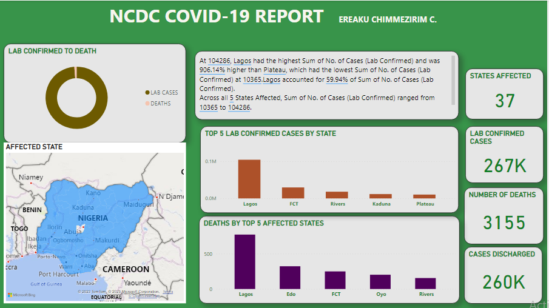

Historical Stock Price Analysis for 10 Companies

Based on my analysis of the historical stock prices for 10 Popular Companies, several key insights emerged:
📉 The total stock volume across the 10 companies amounted to 487 billion.
📉 Apple stood out with the highest stock volume among the companies examined.
📉 March recorded the peak stock volume, indicating a potential correlation with market trends during that month.
📉 The stock prices were generally higher in 2015, suggesting a period of positive market performance.
📉 Notably, the total stock volume reached a peak in 2020, highlighting a significant period of market activity.

In conducting a comprehensive analysis of the COVID-19 pandemic in Nigeria, I gathered data from the Nigeria Centre for Disease Control and Prevention's website,
uncovering several key insights that shed light on the impact and distribution of the virus.
📉 As of the time of this analysis, the total number of confirmed COVID-19 cases across the 36 states, including the Federal Capital Territory (FCT), stood at 267,000. This figure reflects the widespread reach of the virus across the nation.
📉 Tragically, the pandemic has resulted in a total of 3,155 recorded deaths in Nigeria. This sobering statistic emphasizes the severity and consequences of the health crisis on the population.
📉 Lagos, maintaining its position as the epicenter of the disease, reported the highest number of both confirmed cases and deaths. This concentration highlights the challenges faced by densely populated urban areas and underscores the need for targeted interventions in such regions.
This analysis aims to provide a comprehensive understanding of the COVID-19 situation in Nigeria,
offering valuable insights for informed decision-making and targeted interventions to curb the spread of the virus.

Utilizing Microsoft Power BI, an analysis was conducted to reveal trends within green taxi trips in New York City spanning from 2017 to 202.
Green taxis, offering both street-hail and prearranged services, were the focus of this investigation.
Key Insights:
📉 Green taxis in NYC logged 26.34 million trips, generating revenue to the tune of $389.80 million and catering to over 35.60 million passengers.
📉 Saturday experienced the highest pickup activity among the days of the week.
📉 The year 2017 stood out with the highest passenger count.
📉 Sunday emerged as the day with the most successful trips when compared to other days of the week.

Which holds greater importance for you when dining out; the food or the service? I am sure you would say both.
This analysis delved into data containing details about various restaurants in Mexico, encompassing their cuisines, customers, and their preferences.
It reveals trends and patterns in consumers' demographics, preferences, and behavior, offering valuable insights for both existing restaurant owners and potential ones.
Key Insights:
📉 Overview: Feedback from 138 genuine consumers about 130 restaurants offering 23 different types of cuisine across 3 states.
📉 San Luis Potosi had the highest customer count.
📉 Ratings: Restaurants were evaluated based on food, service, and overall experience. Notably, 70% of the restaurants received high ratings for the overall experience they offer.
This information is beneficial for restaurant owners seeking to understand and enhance customer satisfaction.
1853 Stockholm Cholera Outbreak: Death Analysis

The 1853 cholera outbreak in Stockholm, Sweden, marked a severe episode during the third cholera pandemic. Quantum Analytics NG provided the dataset for this analysis, sourced from handwritten church records,
as the church was responsible for population registration until approximately 1870.
The dataset, originally in Swedish, was translated to English for improved comprehension using Google Translate.
Key observations gleaned from the dataset are as follows:
📉 A cumulative total of 215 deaths was documented, with 53% attributed to females and 47% to males.
📉 September had the highest mortality rate, whereas December reported the lowest number of deaths.
📉 The majority of deaths occurred among the adult population.

This dashboard shows a thorough overview of shark attacks over the past hundred years. It includes information on location, activity, victim details (name, gender, age), and the types of shark involved.
Summary of Insights:
📉 The attacks took place during 2563 events across 106 countries.
📉 Of the 106 countries where attacks were recorded, the USA, Australia, and South Africa had the most attacks.
📉 The victims were mostly attacked while surfing, fishing or swimming, with the leg/foot being the most commonly injured known body part.
📉 52 % of the attacks took place in the afternoon.
📉 The year 2000 marked the highest recorded number of attacks.
Recommendation:
It is a good idea to run awareness campaigns in places with many attacks. These campaigns can make water activities safer by promoting and enforcing rules.
E-Commerce Sales Analysis

This project visualizes transaction data from Olist, the largest department store in Brazil. The dataset covers 90,000 orders from 2016 to 2018 across various marketplaces in Brazil.
The data includes information on total customers, orders, salespersons, product categories, customer cities, and payment types.
Key Findings and Suggestions:
📉 Order Overview: Olist processed over 99,000 orders in 23 states.
📉On-time Deliveries: The majority of orders were delivered punctually.
📉 Busiest Month: August recorded the highest number of orders.
📉Top City: Xinguara ranked first in the number of orders.
📉Customer Satisfaction: Approximately 73% of customers provided excellent feedback.
Improving product quality and delivery timelines can significantly enhance customer satisfaction.
Northwind Traders Sales Analysis

The Northwind Traders Sales Report provides valuable insights into the company's performance, shedding light on various aspects of its operations and sales activities.
Key Insights:
📉 The overall number of orders amounts to 809.
📉 A total of 51,000 units were sold.
📉 The generated revenue totals 1.35 million.
📉 The customer base comprises 91 individuals.
📉 The highest revenue was recorded in 2014.
📉 United Package incurred the highest shipping costs.
📉Impressively, over 94% of placed orders were delivered on time.